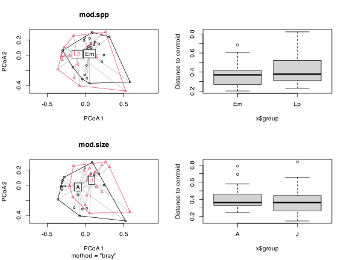
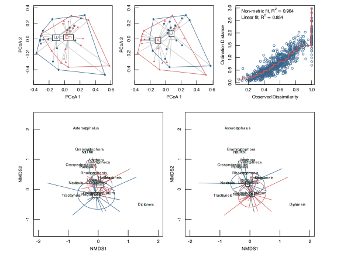
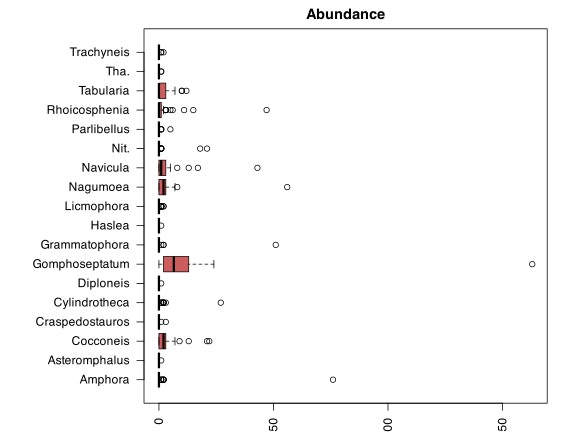
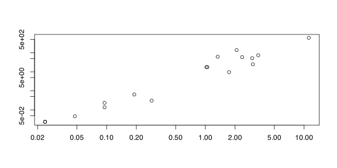
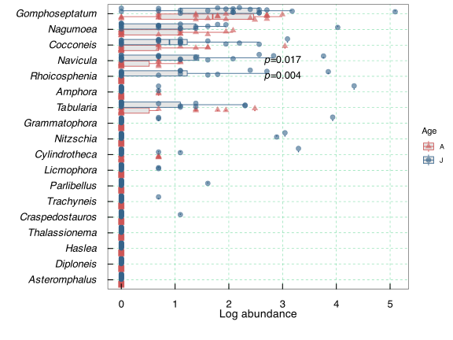
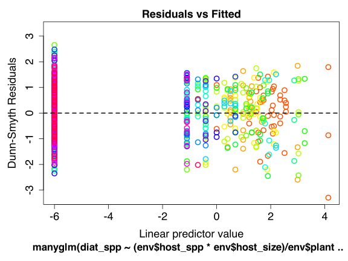

11b. nMDS of Mayombo’s Diatom Data
Replicating the analysis of Serge Mayombo’s ‘Diatoms associated with two South African kelp species: Ecklonia maxima and Laminaria pallida’
![]()
| Type | Name | Link |
|---|---|---|
| Reading | Serge Mayobo’s diatom paper | 💾 Mayombo_et_al_2019.pdf |
| Data | Abbreviated diatom data matrix | 💾 PB_data_matrix_abrev.csv |
| Diatoms data matrix | 💾 PB_data_matrix.csv |
|
| Diatom environmental data | 💾 PB_diat_env.csv |
Kelp forests are known to host a large biomass of epiphytic fauna and flora, including diatoms, which constitute the base of aquatic food webs and play an important role in the transfer of energy to higher trophic levels. Epiphytic diatom assemblages associated with two common species of South African kelps, Ecklonia maxima and Laminaria pallida, were investigated in this study. Primary blades of adult and juvenile thalli of both kelp species were sampled at False Bay in July 2017 and analysed using scanning electron microscopy. The diatom community data are here subjected to a suit of multivariate methods in order to show the structure of the diatom flora as a function of i) kelp species, and ii) kelp size. Read Mayombo et al. (2019) for more details and the findings of the research.
Some feedback was received by anonymous reviewers as part of the peer review process, and it together with my response is repeated below.
Reviewer 1
The design of the observational study includes 2 treatments - age (young versus old) and host species (Laminaria versus Ecklonia), 4 replicates (4 primary blades from each combination of host algae and age), and 3 subsamples from each blade (pseudoreplicates, if treated incorrectly as replicates). The experimental design is analogous to a 2-way ANOVA, but with community data instead of a single individual response variable. This design can evaluate interactive effects between the two treatments (age and species). The authors’ experimental design is most suited to analyses using PERMANOVA, which is the community statistics version of the ANOVA.
Please indicate for the readers why the data were transformed and standardised using the stated procedures. Definitely a good idea to transform data, but the readers need to understand why particular procedures were employed. Please describe the Wisconsin double standardisation (row/column standardised by row/column total – to produce relative abundance to total and column/row standardised by column/row max – to produce abundance relative to species max abundance). Why a double standardisation + square-root transformation, as opposed to a single row/column standardisation by row/column total + square-root transformation?
Please indicate for the readers why the data were transformed and standardised using the stated procedures. Definitely a good idea to transform data, but the readers need to understand why particular procedures were employed. Please describe the Wisconsin double standardisation:
- row/column standardised by row/column total to produce relative abundance to total and column/row standardised; vs.
- column/row max–to produce abundance relative to species max abundance.
AJS: About ANOSIM and PERMANOVA
“Overall, Analysis of Similarities (ANOSIM) and the Mantel test were very sensitive to heterogeneity in dispersions, with ANOSIM generally being more sensitive than the Mantel test. In contrast, PERMANOVA and Pillai’s trace were largely unaffected by heterogeneity for balanced designs. […]. PERMANOVA was also unaffected by differences in correlation structure. […] PERMANOVA was generally, but not always, more powerful than the others to detect changes in community structure.”
AJS: About data transformation
Useful when the range of data values is very large. Data are square root transformed, and then submitted to Wisconsin double standardisation, or species divided by their maxima, and stands standardised to equal totals. These two standardisations often improve the quality of ordinations.
Set-up the analysis environment
Load and prepare the data
The species data
The diatom species data include the following:
- columns: diatom genera
- rows: samples (samples taken from two species of kelp; equivalent to sites in other species x sites tables)
- row names correspond to combinations of the factors in the columns inside
PB_diat_env.csv
where host_size is A for adult kelp plant (host), J for juvenile kelp plant (host), host_spp is Lp for kelp species Laminaria pallida (host), Em for kelp plant Ecklonia maxima (host), plant is the unique number identifying a specific kelp plant, and rep is the replicate tissue sample from each kelp host plant from which the diatoms were extracted.
# with shortened name to fix nMDS overplotting
spp <- read.csv(paste0(root, "PB_data_matrix_abrev.csv"),
row.names = "Replicate", sep = ",", header = TRUE)
spp[1:6, 1:6] Amphora.spp Asteromphalus.spp Cocconeis.spp Craspedostauros.spp
APB1LP1 0 0 0 0
APB1LP2 0 0 0 0
APB1LP3 0 0 0 0
APB2LP1 0 0 0 0
APB2LP2 0 0 0 0
APB2LP3 0 0 0 0
Cylindrotheca.spp Diploneis.spp
APB1LP1 0 0
APB1LP2 0 0
APB1LP3 0 0
APB2LP1 0 0
APB2LP2 0 0
APB2LP3 0 0# with full names
spp2 <- read.csv(paste0(root, "PB_data_matrix.csv"),
row.names = "Replicate", sep = ",", header = TRUE)
spp2[1:6, 1:6] Amphora.spp Asteromphalus.spp Cocconeis.spp Craspedostauros.spp
APB1LP1 0 0 0 0
APB1LP2 0 0 0 0
APB1LP3 0 0 0 0
APB2LP1 0 0 0 0
APB2LP2 0 0 0 0
APB2LP3 0 0 0 0
Cylindrotheca.spp Diploneis.spp
APB1LP1 0 0
APB1LP2 0 0
APB1LP3 0 0
APB2LP1 0 0
APB2LP2 0 0
APB2LP3 0 0# remove ".spp" from column header name
colnames(spp) <- str_replace(colnames(spp), "\\.spp", "")
colnames(spp2) <- str_replace(colnames(spp2), "\\.spp", "")Logarithmic transformation as suggested by Anderson (2006): \(log_{b}(x) + 1\) for \(x > 0\), where \(b\) is the base of the logarithm; zeros are left as zeros. Higher bases give less weight to quantities and more to presences.
The ‘environmental’ data
The content is described above; these variables are categorical vars – they are not actually ‘environmental’ data, but their purpose in the analysis is analogous to true environmental data; it’s simply data that describe where the samples were taken from.
env <- tibble(read.csv(paste0(root, "PB_diat_env.csv")),
sep = ",", header = TRUE)
env$plant <- as.factor(env$plant)
env$rep <- as.factor(env$rep)
head(env)# A tibble: 6 × 7
replicate host_size host_spp plant rep sep header
<chr> <chr> <chr> <fct> <fct> <chr> <lgl>
1 APB1LP1 A Lp 1 1 , TRUE
2 APB1LP2 A Lp 1 2 , TRUE
3 APB1LP3 A Lp 1 3 , TRUE
4 APB2LP1 A Lp 2 1 , TRUE
5 APB2LP2 A Lp 2 2 , TRUE
6 APB2LP3 A Lp 2 3 , TRUE With the environmental data (factors), the following analyses can be done:
- ✘ Discriminant Analysis (DA)
- ✘ Analysis of Similarities (ANOSIM)
- ✔︎ Permutational Analysis of Variance (PERMANOVA)
- ✘ Mantel test
We will do an nMDS and PERMANOVA.
Multivariate homogeneity of group dispersions (variances)
Before doing the PERMANOVA (testing differences between means), first check to see if the dispersion is the same. See ?adonis2 for more on this.
Homogeneity of groups betadisper() evaluates the differences in group homogeneities. We can view it as being analogous to Levene’s test of the equality of variances. The null hypothesis evaluated is that the population variances are equal. Unfortunately we can only use one factor as an independent variable so it is not yet possible to look for interactions (species × size).
So, we test the \(H_{0}\) that the dispersion (variance) in diatom community structure does not differ between the two host species:
(mod.spp <- with(env, betadisper(spp.log.dis, host_spp)))
Homogeneity of multivariate dispersions
Call: betadisper(d = spp.log.dis, group = host_spp)
No. of Positive Eigenvalues: 20
No. of Negative Eigenvalues: 21
Average distance to median:
Em Lp
0.3640 0.4391
Eigenvalues for PCoA axes:
(Showing 8 of 41 eigenvalues)
PCoA1 PCoA2 PCoA3 PCoA4 PCoA5 PCoA6 PCoA7 PCoA8
1.9619 1.7968 1.3888 1.0040 0.8491 0.6366 0.3132 0.3008 anova(mod.spp)Analysis of Variance Table
Response: Distances
Df Sum Sq Mean Sq F value Pr(>F)
Groups 1 0.05876 0.058761 2.6087 0.1141
Residuals 40 0.90101 0.022525 There is no difference in dispersion between the diatom communities on the two host species. Apply the same procedure to see if host size has an effect:
(mod.size <- with(env, betadisper(spp.log.dis, host_size)))
Homogeneity of multivariate dispersions
Call: betadisper(d = spp.log.dis, group = host_size)
No. of Positive Eigenvalues: 20
No. of Negative Eigenvalues: 21
Average distance to median:
A J
0.4005 0.3889
Eigenvalues for PCoA axes:
(Showing 8 of 41 eigenvalues)
PCoA1 PCoA2 PCoA3 PCoA4 PCoA5 PCoA6 PCoA7 PCoA8
1.9619 1.7968 1.3888 1.0040 0.8491 0.6366 0.3132 0.3008 anova(mod.size)Analysis of Variance Table
Response: Distances
Df Sum Sq Mean Sq F value Pr(>F)
Groups 1 0.00141 0.0014134 0.0604 0.8071
Residuals 40 0.93615 0.0234038 No, it does not have an effect either. Make some plots to visualise the patterns:

Optionally, we can confirm the above analysis with the permutest() function. permutest() is a permutational ANOVA-like test that tests the \(H_{0}\) that there is no difference in the multivariate dispersion of diatom community structure between Ecklonia maxima and Laminaria pallida, and between adult and juvenile plants:
permutest(mod.spp) # there is in fact no difference
Permutation test for homogeneity of multivariate dispersions
Permutation: free
Number of permutations: 999
Response: Distances
Df Sum Sq Mean Sq F N.Perm Pr(>F)
Groups 1 0.05876 0.058761 2.6087 999 0.116
Residuals 40 0.90101 0.022525 permutest(mod.size) # nope...
Permutation test for homogeneity of multivariate dispersions
Permutation: free
Number of permutations: 999
Response: Distances
Df Sum Sq Mean Sq F N.Perm Pr(>F)
Groups 1 0.00141 0.0014134 0.0604 999 0.804
Residuals 40 0.93615 0.0234038 It should be sufficient to do the anova(), above, though. You can safely ignore the permutest().
PERMANOVA
Permutational multivariate Analysis of Variance (PERMANOVA; Anderson and Walsh (2013)) uses distance matrices (Bray-Curtis similarities by default), whereas ANOSIM uses only ranks of Bray-Curtis. The former therefore preserves more information and it is the recommended approach to test for differences between multivariate means. PERMANOVA also allows for variation partitioning and permits for more complex designs (multiple factors, nested factors, interactions, covariates, etc.). To this end, we use adonis2() to evaluate the differences in the group means, which makes it analogous to multivariate analysis of variance.
Note that nestedness should be stated in the blocks (plants): “If you have a nested error structure, so that you do not want your data be shuffled over classes (blocks), you should define blocks in your permutation” – Jari Oksannen
# the permutational structure captures the nesting of replicates within plant
perm <- how(nperm = 1000)
setBlocks(perm) <- with(env, plant)
(perm.1 <- adonis2(spp.log.dis ~ host_spp * host_size,
method = p, data = env,
permutations = perm))Permutation test for adonis under reduced model
Terms added sequentially (first to last)
Blocks: with(env, plant)
Permutation: free
Number of permutations: 1000
adonis2(formula = spp.log.dis ~ host_spp * host_size, data = env, permutations = perm, method = p)
Df SumOfSqs R2 F Pr(>F)
host_spp 1 0.2991 0.03815 1.7234 1
host_size 1 0.3726 0.04754 2.1475 1
host_spp:host_size 1 0.5727 0.07306 3.3003 1
Residual 38 6.5938 0.84124
Total 41 7.8381 1.00000 There is no effect resulting from host species, host size, or interactions between the two.
nMDS
Do the nMDS and assemble the figures:
spp.nmds <- metaMDS(spp.log, k = 2,trymax = 100, trace = 0,
distance = "bray", wascores = TRUE)
# not printed as it is too long...
# scores(spp.nmds, display = "species")
# scores(spp.nmds, display = "sites")col <- c("indianred3", "steelblue4")
pch <- c(17, 19)
opar <- par()
plt1 <- layout(rbind(c(1, 1, 2, 2, 3, 3),
c(4, 4, 4, 5, 5, 5)),
heights = c(2, 3),
respect = TRUE)
# layout.show(plt1)
par(mar = c(3,3,1,1))
# plot 1
plot(mod.spp, main = NULL,
tck = .05, mgp = c(1.8, 0.5, 0), col = col, pch = pch,
sub = NULL)
# plot 2
plot(mod.size, main = NULL,
tck = .05, mgp = c(1.8, 0.5, 0), col = col, pch = pch,
sub = NULL)
# plot 3
stressplot(spp.nmds, p.col = "steelblue4", l.col = "indianred3",
tck = .05, mgp = c(1.8, 0.5, 0))
# plot 4
par(mar = c(3,3,2,1))
plot(spp.nmds, display = "sites", type = "n",
main = NULL,
tck = .05, mgp = c(1.8, 0.5, 0),
xlim = c(-2, 2), ylim = c(-1, 2))
with(env,
points(spp.nmds, display = "sites", col = col[host_spp],
pch = pch[host_spp]))
with(env,
ordispider(spp.nmds, groups = host_spp,
label = TRUE,
col = col))
with(env, ordiellipse(spp.nmds, groups = host_spp,
col = col, label = FALSE))
points(spp.nmds, display = "species", pch = 1, col = "seagreen")
orditorp(spp.nmds, display = "species", cex = 0.8,
col = "black", air = 0.01)
# plot 5
par(mar = c(3, 3, 2, 1))
plot(spp.nmds, display = "sites", type = "n",
main = NULL,
tck = .05, mgp = c(1.8, 0.5, 0),
xlim = c(-2, 2), ylim = c(-1, 2))
with(env,
points(spp.nmds, display = "sites", col = col[host_size],
pch = pch[host_size]))
with(env,
ordispider(spp.nmds, groups = host_size,
label = TRUE,
col = col))
with(env, ordiellipse(spp.nmds, groups = host_size,
col = col, label = FALSE))
points(spp.nmds, display = "species", pch = 1, col = "seagreen")
orditorp(spp.nmds, display = "species", cex = 0.8,
col = "black", air = 0.01)
# dev.off()
par(opar)Multivariate abundance using Generalised Linear Models
What follows is an example of ‘Model-based Multivariate Analyses.’ I’ll not discuss this method here, but merely repeat the code as used in the Mayombo et al. (2019) paper. For background to the Multivariate abundance using Generalised Linear Models approach, refer to Wang et al. (2012) and Wang et al. (2017).
Look at the spread of the data using the boxplot function. The figure is not used in paper:
par(mar = c(2, 10, 2, 2)) # adjusts the margins
boxplot(spp, horizontal = TRUE, las = 2, main = "Abundance", col = "indianred")
Check the mean-variance relationship:
meanvar.plot(diat_spp)
The above plot shows that spp with a high mean also have a high variance.
- Are there differences in the species composition of the diatom spp. sampled? This has already been addressed above, but we can apply an lternative approach below.
- Do some of them specialise on particular spp of kelp, while others are more generalised? Addressed below.
- Do some occur more on juveniles, while some are on adults, and which ones indiscriminately live across age classes? Addressed below.
- Which species? Addressed below.
Scale manually for ggplot2() custom plot. Create a scale function:
Make a plot that shows which diatoms species are responsible for differences between adult and juvenile kelps:
spp2 %>%
mutate(host_size = env$host_size) %>%
gather(key = species, value = abund, -host_size) %>%
as_tibble() %>%
group_by(species) %>%
mutate(log.abund = log_fun(abund)) %>%
ungroup() %>%
ggplot(aes(x = fct_reorder(species, abund, .fun = mean), y = log.abund)) +
geom_boxplot(aes(colour = host_size), size = 0.4, outlier.size = 0,
fill = "grey90") +
geom_point(aes(colour = host_size, shape = host_size),
position = position_dodge2(width = 0.8),
alpha = 0.6, size = 2.5) +
scale_colour_manual(name = "Age", values = c("indianred3", "steelblue4")) +
scale_shape_manual(name = "Age", values = c(17, 19)) +
annotate("text", x = 15, y = 3, size = 4.5,
label = expression(paste(italic("p"), "=0.017"))) +
annotate("text", x = 14, y = 3, size = 4.5,
label = expression(paste(italic("p"), "=0.004"))) +
scale_y_continuous(name = "Log abundance") +
coord_flip() + theme_bw() +
theme(panel.grid.major = element_line(linetype = "dashed",
colour = "seagreen3", size = 0.2),
panel.grid.minor = element_blank(),
axis.text.x = element_text(size = 13, color = "black",
margin = unit(c(0.5, 0.5, 0.5, 0.5), "cm")),
axis.text.y = element_text(size = 13, color = "black", face = "italic",
margin = unit(c(0.5, 0.5, 0.5, 0.5), "cm")),
axis.title.x = element_text(size = 14, vjust = 5.75, color = "black"),
axis.title.y = element_blank(),
axis.ticks.length = unit(-0.25, "cm"),
axis.ticks = element_line(color = "black", size = 0.5))
I settle on a negative binomial distribution for the species data. This will be provided to the manyglm() function:
size_mod2 <- manyglm(diat_spp ~ (env$host_spp * env$host_size) / env$plant,
family = "negative binomial")
plot(size_mod2) # better residuals...
# anova(size_mod2, test = "wald")
out <- anova(size_mod2, p.uni = "adjusted", test = "wald")Time elapsed: 0 hr 0 min 15 secout$table Res.Df Df.diff wald Pr(>wald)
(Intercept) 41 NA NA NA
env$host_spp 40 1 5.227772 0.309
env$host_size 39 1 7.799205 0.004
env$host_spp:env$host_size 38 1 5.434128 0.011
env$host_spp:env$host_size:env$plant 26 16 NaN 0.001What is the proportional contribution of some important species to juvenile and adult plants?
prop.contrib <- data.frame(spp = colnames(out$uni.test),
prop = out$uni.test[3, ],
row.names = NULL)
prop.contrib %>%
mutate(perc = round((prop / sum(prop)) * 100, 1)) %>%
arrange(desc(perc)) %>%
mutate(cum = cumsum(perc)) spp prop perc cum
1 Rhoicosphenia 4.05979831 16.7 16.7
2 Navicula 3.65789127 15.1 31.8
3 Nitzschia 2.65842186 10.9 42.7
4 Amphora 2.39874550 9.9 52.6
5 Cocconeis 2.10936669 8.7 61.3
6 Nagumoea 1.92435482 7.9 69.2
7 Gomphoseptatum 1.86301773 7.7 76.9
8 Cylindrotheca 1.79282759 7.4 84.3
9 Parlibellus 1.40898477 5.8 90.1
10 Licmophora 0.83203299 3.4 93.5
11 Tabularia 0.64240853 2.6 96.1
12 Craspedostauros 0.40412954 1.7 97.8
13 Grammatophora 0.14035115 0.6 98.4
14 Thalassionema 0.09310783 0.4 98.8
15 Asteromphalus 0.08434341 0.3 99.1
16 Diploneis 0.07915274 0.3 99.4
17 Haslea 0.07915274 0.3 99.7
18 Trachyneis 0.07149347 0.3 100.0References
Reuse
Citation
@online{smit2021,
author = {Smit, AJ},
title = {11b. {nMDS} of {Mayombo’s} {Diatom} {Data}},
date = {2021-01-01},
url = {https://tangledbank.netlify.app/BCB743/11-nMDS_diatoms.html},
langid = {en}
}